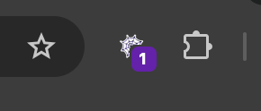

Aquí podrás ver peticiones HTTP recientes y convertirlas fácilmente en nuevas trampas 🕵️♀️
Soy Lucy, tu amigable araña del código. Mi trabajo es muy simple (y un poco pegajoso): me encargo de atrapar peticiones HTTP (bichos) en mi telaraña digital antes de que lleguen al servidor.
Mis objetivos son claros:Y sí, puedes hablarme con configuraciones —soy una araña moderna, ¡entiendo JavaScript!
Cuando quieras enseñarme a atrapar un bicho, sólo tienes que crear la regla en mi formulario de Nuevo/Editar. Haré una telaraña para él.
Campos:
{
"data": {
"id": 1,
"name": "Lucy",
"job": "HTTP eater"
}
}
Cuando termines, tendrás tu regla listada en la telaraña. Al crearla estará desactivada por defecto. Sólo buscala en la lista, revisa que todo esté bien y activala.
Aquí es donde conservo todas las trampas que se han tejido. Puedes verlos en la pestaña Telaraña. Mira cómo leerla:
🐞 Cada fila representa una regla para capturar bichos
🛠️ Acciones por regla
Hay dos botones especiales para cada trampa en la telaraña:
🕸️ Capturar
Cuando haces clic en
, activo la trampa. Eso significa:
👉 Verás el botón cambiar a Liberar para mostrar que está activa.
✋ Liberar
Al hacer clic en
, Me desenredo un poquito:
👉 El botón cambiará a Capturar de nuevo.
🧠 Consejo:
Puedes activar o desactivar trampas cuando quieras, sin necesidad
de recargar la página. ¡Rápido y limpio!
Pero si sientes que algo no funciona bien, puedes recargar
manualmente.
En algunos casos requiero, sacudir la telaraña y recargar la página. ¿Por qué? Para asegurarme de que no quede ningún hilo colgando, que pueda alterar el comportamiento del sitio web.
Así que si ves que de pronto la página se recarga... no te asustes: ¡fui yo! Me aseguré de dejar el entorno tan limpio como mi código.
¿No recuerdas los detalles de la trampa que vas a crear?
Puedo espiar las peticiones recientes y mostrarlas en la pestaña
Espiar peticiones.
Haz clic en y te llevaré directo al formulario con los datos importantes ya listos.
Ajusta lo que necesites y guarda la trampa. ¡Seguimos con la caza!
La lista es temporal y sólo muestra las peticiones más recientes
Aquí en mi rincón de la pestaña Opciones, te dejo hilos mágicos para mover las reglas dentro y fuera de mi telaraña:
Tanto el exportar como el importar deben ir en un archivo JSON con la siguiente estructura:
[
{
"name": "Intercept de usuario",
"url": "https://api.ejemplo.com/usuario/{id}",
"method": "GET",
"statusCode": 200,
"webSite": "https://ejemplo.com",
"response": {
"id": 1,
"nombre": "Lucy"
}
},
...
]
⚠️ Importante: cuando importes, tus reglas actuales no se
perderán. Pero por seguridad, todas se desactivarán. Revisa que
todo esté bien y activa las que necesites.
¿Ves ese con un número junto al ícono de la extensión? 🕸️ Ese soy yo, Lucy, mostrándote cuántas trampas tengo activas.
El número indica cuántas reglas están vigilando URLs ahora mismo.
Así puedes ver de un vistazo si estoy en modo caza... o de siesta 💤.
Me encanta compartir la emoción cuando una caza sale bien. Por eso, el ícono junto a la extensión parpadeará cada vez que atrape un bicho en forma de petición HTTP.
Este destello fugaz es mi forma de aplaudir mi propia puntería. Si lo ves brillar, sabés que alguna trampa se activó y devoré una petición antes de que llegara al servidor.
🧠 Consejo de Lucy: Si el ícono no parpadea, probablemente no haya ningún bicho activo… o me estoy tomando un descanso 💤.
Gracias por confiar en Lucy. Estamos abiertos a cualquier sugerencia que quieras compartir.
Hecho con ❤️ por Diego López.
— “Y vigilado por mí, claro 🕷️” —Lucy